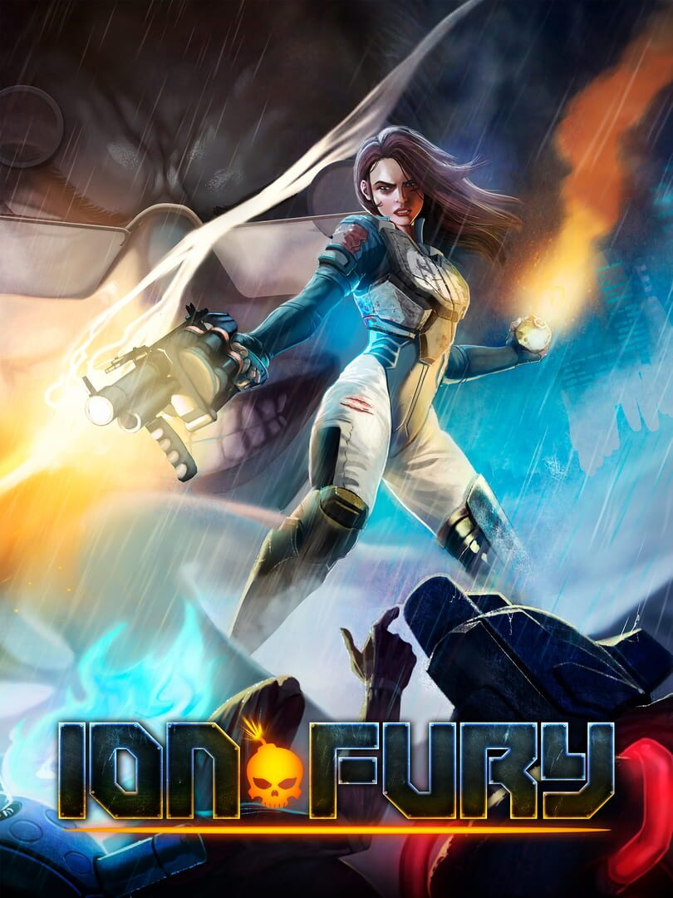

Ion Fury
Ion Fury
Details
|  | |
| Playtime | 17h 27m 0s |
| Last Activity | 2021-01-30 0:14:34 |
| Added | 2023-08-11 0:29:07 |
| Modified | 2025-10-02 10:05:38 |
| Completion Status | Completed |
| Library | Steam |
| Source | Steam |
| Platform | PC (Linux) PC (Windows) |
| Release Date | 2019-08-15 |
| Community Score | 76 |
| Critic Score | 84 |
| User Score | |
| Genre | Indie Shooter |
| Developer | Voidpoint |
| Publisher | 3D Realms |
| Feature | Single Player |
| Links | Steam Official Website Wikipedia GOG Twitch Itch Discord YouTube Nintendo Playstation |
| Tag | 1990's 2.5D Action Boomer Shooter Classic Cyberpunk Exploration Fast-Paced Female Protagonist First-Person FPS Gore Great Soundtrack Indie Old School Retro Sci-fi Shooter Singleplayer Violent |
Description


While Shelly “Bombshell” Harrison earned her codename defusing bombs for the Global Defense Force, when evil transhumanist mastermind Dr. Jadus Heskel unleashes the members of his cybernetic cult onto the streets of Neo DC, she knows it’s time to start causing explosions instead of preventing them.
Her quest to slay Heskel leaves a trail of carnage throughout huge, multi-path levels filled with gigantic explosions, more secret areas than we can count, and inhuman foes behind every corner. There’s no regenerating health here; stop taking cover and start running and gunning.

Shelly’s crusade to take down Heskel’s army will see her leave destruction in her wake with a wide arsenal of weapons, complete with alternate fire modes and different ammo types. Her signature revolver, the tri-barreled Loverboy, brings enemies pain and players pleasure with both single shots and Old West-style hammer fanning action. Who needs a regular shotgun when you can load buckshot into your grenade launcher? Violent, over-the-top Bowling Bombs rip enemies apart with ease.

Ion Fury laughs at the idea of mandatory checkpoints and straight paths through shooting galleries. But, just because this is a true old-school first-person shooter doesn’t mean we've ignored all the good new stuff the last two decades have brought. Headshots? Hell yeah. More physics and interactivity? You betcha. Widescreen, controller support, and Auto Saves? 3D Realms and Voidpoint have taken the best of both worlds and cooked it all into a bloody stew.


- The true successor to classic shooters such as Duke Nukem 3D, Shadow Warrior, and Blood.
- Experience the original BUILD engine on steroids, pumped up and ready to rock again after 20 years!
- Duck, jump, climb, swim, and blast your way through 7 exciting zones packed with multiple levels of mayhem!
- A beautiful game world assembled from thousands of hand-crafted textures and sprites
- An awe-inspiring arsenal of devastating weapons, including multiple ammo types and alternate fire modes. Tri-barreled revolvers, grenade launchers, and heat-seeking smart bombs are your best friends!
- The classic '90s FPS action you love, meshed with modern inventions like locational damage and seamless level transitions
- ZERO PROCEDURAL GENERATION. All levels are hand made and full of multiple paths, cool effects, and complex set pieces!
- Thumping soundtrack comprised of true tracked module music, in authentic FastTracker 2 format
- Easy access on to level editor and other development tools on day one, plus Steam Workshop support